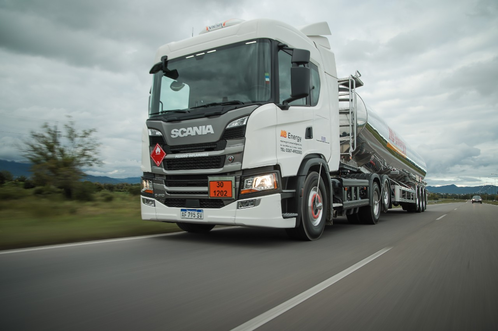

Scania es una reconocida marca sueca de camiones y vehículos industriales con presencia global. Los camiones Scania son ampliamente utilizados en Argentina y en todo el mundo debido a su reputación por su rendimiento, fiabilidad y eficiencia.
En cuanto a los camiones Scania con chasis en Argentina, Scania ofrece una amplia gama de modelos con diferentes capacidades de carga y configuraciones de chasis para adaptarse a las necesidades específicas de los clientes.
Algunos de los modelos populares de camiones Scania con chasis que podrían haber estado disponibles en Argentina incluyen:
Scania P-series: Diseñada para aplicaciones urbanas y regionales, esta serie ofrece una configuración versátil de chasis que es adecuada para diversos tipos de carrocerías y usos, como camiones de reparto y recolección de residuos.
Scania G-series: Estos camiones ofrecen mayor comodidad y ergonomía para aplicaciones de transporte a larga distancia. También pueden estar disponibles con configuraciones de chasis específicas para diversas aplicaciones de carga.
Scania R-series: La serie R se enfoca en el transporte de larga distancia y puede tener opciones de chasis adecuadas para aplicaciones específicas en la industria del transporte de carga.
Scania S-series: Similar a la serie R, esta línea está diseñada para transporte de larga distancia y puede estar disponible con diversas opciones de chasis.